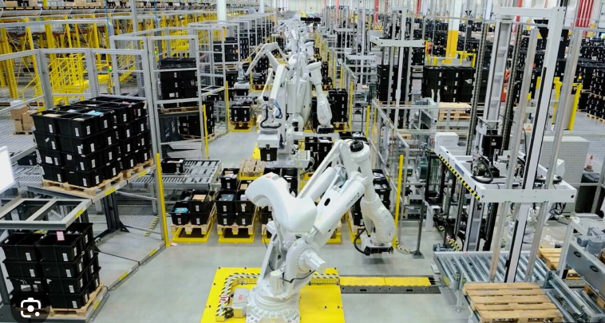
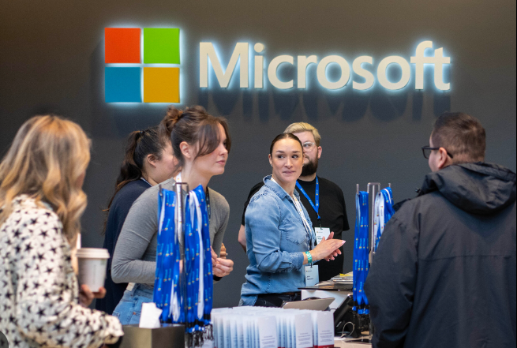
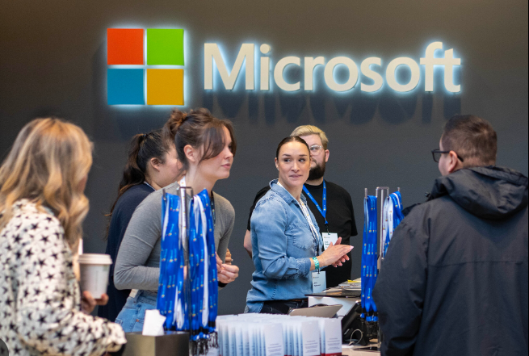

Fabian Gutierrez
Hello everyone! My name is Fabian Gutierrez and I'm currently pursuing a Bachelor's degree in Computer Science at the University of California, Riverside. I've always been passionate about the tech industy, and wanted to learn how everything works.
Experience
Tutor
• Offered academic support to students of various ages in subjects
• Improving students' understanding and retention of key concepts
• Monitored student progress and provided constructive feedback
Stagehands
• Assisted in the construction, installation, and arrangement of stage sets, props, and scenery according to the production's requirements and design.
• Assisted with the setup and operation of technical equipment, such as lighting fixtures, sound equipment, and special effects mechanisms
• Work closely with fellow stage hands, technical crew, performers, and production staff to create a cohesive and successful production
IT Technician
• Installed, configured, and maintained public computer stations
• Monitored and resolved network and connectivity issues, maintaining stable internet and Wi-Fi access for library patrons and staff.
• Provided on-site technical support for library staff and patrons
Education
University of California Riverside
Portfolio



